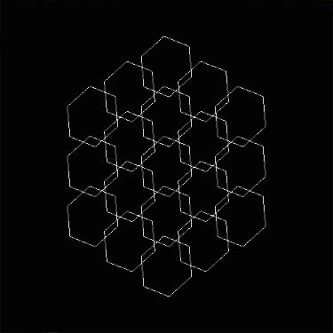

< 2020 />

Advanced graphics and Real-time rendering DX11 engine
You can read more about what featuers this engine has in the github link provided below. I had a blast working on this assigment and I plan on working on this engine as a side project.

Discord bot (Node.js)
Over the summer I decided to create a discord bot using discord.js as a framework. Currently the bot can do the following:
- Play music to people in a voice channel by simply giving it a youtube song URL
- Put songs into a queue when multiple songs are requested
- Skip songs
I plan on continuing to work on this bot, adding features like several moderation tools (kicking / banning / deleting messages).
< 2019 />

Honeycomb Gif (C++ in OpenGL)
This was a fun project to work on as originally saw a very similar gif while browsing twitter and thought it would be a fun challenge to attempt to re-create it. Unfortunately, I've lost the gif I was inspired by.
I created this project as a way to help develop my understanding and further my skills of both C++ and OpenGL.
< 2017 - 2018 />
Game of Life (C++)
I recreated the well-known simulation called 'Game of Life' by British mathematician, John Conway back in 1970.
I made this because I was still quite new to C++ at the time and the rules of the game seemed simple enough to attempt.
Those rules being:
Any live cell with fewer than two live neighbors dies, as if by underpopulation.
Any live cell with two or three live neighbors lives on to the next generation.
Any live cell with more than three live neighbors dies, as if by overpopulation.
Any dead cell with exactly three live neighbors becomes a live cell, as if by reproduction.
Wikipedia
A* Pathfinding (Java)
I've always had a love for AI and wanted to give it a go making my own AI using A*. The AI is set up to go from the top left corner to the bottom right. Note: the AI has a 50ms delay each move to make it easier to see its steps
Key:
Black squares: WallsRed squares: Closed set (squares visited)
Green squares: Open set (possible squares to visit)
Blue squares: Best possible path
This Website
I've always wanted to make my own website, so I decided in November of 2018 to finally bite the bullet and begin to learn HTML, CSS and how to make a responsive webpage.
However, I have ever played around with HTML before in early 2018 but due to college work I was never able to have the time. However, at university I was given a lot of downtime in my first semester and decided to make the most of it.